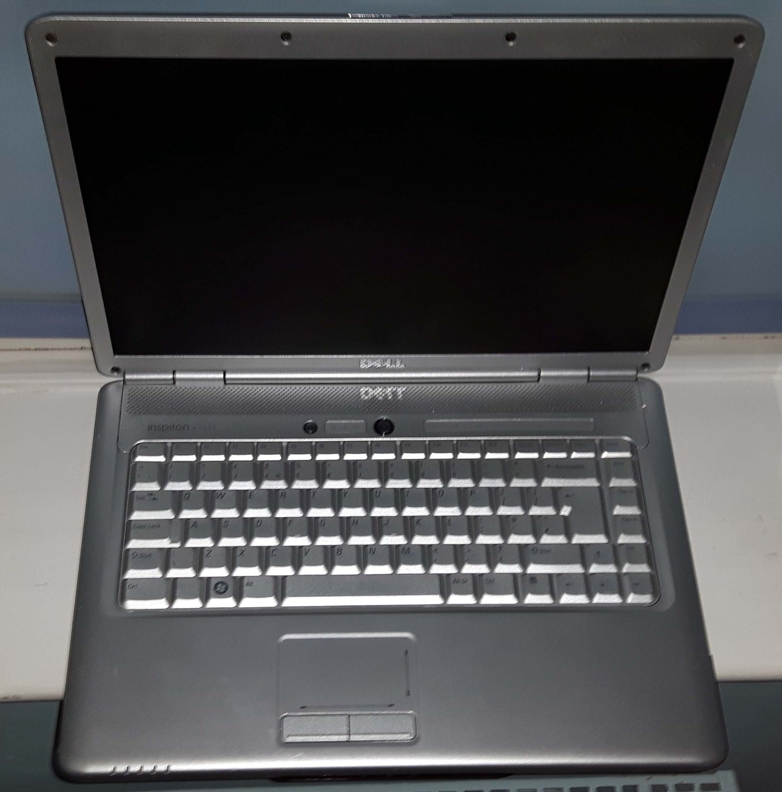

The Autopsy Report · Device #069
The Dell Inspiron
Dell's everyman laptop: the configurable consumer line that sold in huge numbers and still turns up in closets everywhere. Our representative is the 2008 Inspiron 1525 — the 15-inch workhorse of the Vista era. Model overview
What is this thing?
The Inspiron is Dell's consumer laptop line — the machines sold to homes and students rather than businesses, customizable at order time from a menu of processors, memory, drives, and wireless cards. That configurability is the line's defining trait and its documentation challenge: no two Inspirons are quite the same machine. Our representative is the Inspiron 1525, released January 4, 2008 at $500 — a 15.4-inch mid-range laptop that succeeded the 1520, sold in huge numbers, and was discontinued February 26, 2009. An AMD-based sibling, the 1526, existed alongside it. Model overview
Because configurations vary so much, we anchor every chip claim to one documented configuration: a real 1525 whose owner published its full component list (Core 2 Duo T8300, 4 GB DDR2, Intel 3945ABG wireless). Where the model offered options, we say "options included" and list the range. Documented 1525 configuration
Not yet on our bench
No Inspiron has sat on our bench yet. No disassembly, no diagnostics run, no battery test, no original-unit photography. Everything below comes from Dell's manuals, the published model record, and one owner's meticulously documented configuration. When a 1525 lands on the bench, this page gets its second act.
A short history
- January 4, 2008The Inspiron 1525 launches at $500, succeeding the 1520. New edge-design chassis — slimmer and less boxy than its predecessor — with a 15.4-inch display and a ~6 lb carry weight. Model overview
- 2008The 1525 becomes a high-volume seller, praised for price and customizability. Reviewers note the trade-offs: no dedicated graphics (the 1520 had one), raspy speakers, and a fan some owners found irritatingly loud. Reception
- June 26, 2008The Inspiron 1535 — sold as the Dell Studio — follows it. Model overview
- January 6, 2009The Inspiron 1545 supersedes the 1525, with higher-end options at a lower starting price — but losing the HDMI port, the LED indicators, and the second headphone jack. Model overview
- February 26, 2009The 1525 is discontinued after thirteen months. The Inspiron line, of course, marches on for decades. Model overview
The outside
The 1525 is a 15.4-inch widescreen laptop (1280×800 standard, 1440×900 TrueLife optional) in Dell's then-new edge-design chassis. Around the sides, the port selection reads like a 2008 time capsule: 4× USB 2.0, VGA, HDMI (a real selling point — the 1545 dropped it), S-Video, FireWire (optional), Ethernet, a 56k modem jack, an ExpressCard slot, two headphone jacks and a microphone jack on the front edge, a memory card reader, and an optional 2 MP webcam. There's even a SIM slot under the battery — though without a separate WWAN card installed, it's decorative. Media buttons sit above the keyboard; the wireless kill-switch hides on the right side near the front, where owners kept overlooking it. Specs & ports · Documented configuration

The board
The 1525's platform is Intel's Santa Rosa generation: GM965 Express chipset with GMA X3100 integrated graphics — note integrated; unlike the 1520, there's no dedicated GPU option, which is why the model can't drive high-end graphics and why one shared heatsink cools both CPU and GPU. Processor options spanned Celeron, Pentium Dual-Core, and Core 2 Duo (up to the T9x00 series on Socket P); our documented configuration carries a Core 2 Duo T8300 at 2.40 GHz. Memory: two DDR2 SODIMM slots, 667 MHz, up to 6 GB. Wireless was a mini-card lottery — Broadcom-based Dell 1397/1490 or Intel 3945ABG/4965AGN depending on configuration; our documented unit has the Intel PRO/Wireless 3945ABG. Wired Ethernet is a Marvell 88E8040; audio is Intel HD Audio (ICH8 family, STAC9228 codec in the documented unit); the DVD drive is a tray-load TSSTcorp unit. Storage: 5400 RPM SATA spinning disks, 80–320 GB. System specifications · Documented configuration
Two maintenance notes from the record, worth knowing before anyone opens one: a low CMOS battery can prevent the machine from operating properly — and the CMOS battery sits on the underside of the main board, so proper replacement means a full board removal. And the single shared heatsink means overheating degrades CPU and GPU together over time; clogged vents and dead fans are the usual accomplices. Hardware issues
Under the microscope: the chips
Rows marked documented configuration come from one owner's published component list; model range rows come from the model's spec record. Confirmed means the source directly states it.
| Chip | What it does | How we know | Dig deeper |
|---|---|---|---|
| Intel Core 2 Duo T8300 2.40 GHz · 800 MHz FSB · 3 MB L2 — documented configuration |
The processor in our reference unit. Model range: Celeron through Core 2 Duo T9x00. | Confirmed Owner's published component list; model range from the spec record. | Documented configuration |
| Intel GM965 Express model range |
The chipset — memory controller and platform hub. | Confirmed Model spec record. | System specifications |
| Intel GMA X3100 integrated graphics — model range |
Graphics, integrated into the chipset — no dedicated GPU on the 1525. | Confirmed Model spec record; the documented unit reports Intel 965 GM. | System specifications |
| Intel PRO/Wireless 3945ABG documented configuration |
Wi-Fi mini-card in our reference unit. Model options also included Broadcom-based Dell cards and the Intel 4965AGN. | Confirmed Owner's published component list; options from the spec record. | Documented configuration |
| Marvell 88E8040 documented configuration |
Wired Ethernet controller. | Confirmed Owner's published component list. | Documented configuration |
| Intel 82801H (ICH8) HD Audio STAC9228 codec — documented configuration |
Sound. The documented unit's codec variant had known Linux driver quirks — fixed with backported drivers, per the owner's notes. | Confirmed Owner's published component list and notes. | Documented configuration |
The exact board revision, BIOS version, and wireless card in any given 1525 vary by configuration — that's the Inspiron way, and it's why the bench will document one specific unit rather than "the" 1525. 1525 manual
The government's file
Honest scope note: there is no family-wide Inspiron FCC ID. Compliance and module IDs vary by model and by which wireless card a given configuration shipped with. We have not verified an FCC ID for the 1525 specifically, so we claim none — a bench unit's regulatory label would settle it with a photo.
Listening, not knocking
Our posture: we listen, we don't knock. Dell's later-era diagnostic path is ePSA (Enhanced Pre-Boot System Assessment) — power on, press F12 at the Dell logo, choose Diagnostics from the boot menu; it tests every detected device and reports error codes, no disassembly, no credentials, no locks defeated. But the honest caveat: the ePSA documentation we could verify is for later models (a Latitude 5580 manual and a university IT guide), and no model-era documentation confirms the 2008-era 1525 carries ePSA or that exact F12 path — the 1525 predates ePSA's rollout, so this stays a later-era procedure, not a verified 1525 one. When a 1525 reaches our bench: whatever diagnostics the unit itself offers, run with published error codes (or the lack thereof), plus CMOS battery voltage check and a thermal inspection of that shared heatsink. Listening only. Dell ePSA manual (later model) · University diagnostics guide
What we didn't do
- No bench work yet: no disassembly, no ePSA run, no battery test, no original-unit photos.
- We claim no FCC ID for the 1525 — none verified.
- We did not bypass any BIOS password, Computrace, or other protection — and we never will.
- Nothing here touches credentials, keys, or user data.
By the numbers
- Line: Dell Inspiron (consumer laptops) Model overview
- Representative: Inspiron 1525 — Jan 2008 – Feb 2009, $500 at launch Model overview
- Platform: Intel GM965 + GMA X3100 integrated graphics; Celeron to Core 2 Duo System specifications
- Documented config: T8300 2.4 GHz, 4 GB DDR2-667, Intel 3945ABG Wi-Fi, Marvell 88E8040 Ethernet, 15.4" 1440×900 Documented configuration
- Ports: 4× USB 2.0, VGA, HDMI, S-Video, FireWire (opt.), Ethernet, modem, ExpressCard, 2× headphone, mic, card reader System specifications
- Diagnostics: ePSA documented for later Dell models; 1525-era support unverified Dell ePSA manual (later model)
What awaits the bench
- A 1525 of our own — exact configuration, our photos, service-tag-recorded specs.
- Whatever diagnostics the 1525 itself offers, run with published results.
- CMOS battery voltage and the underside-of-board replacement path, documented.
- Thermal inspection: the shared heatsink, repaste, before-and-after.
- A regulatory-label photo to settle the FCC question for that unit.
Words to know
Every term this page uses, in plain English. No prior knowledge required.
- Chipset
- The supporting chips around the processor — memory controller, I/O hub. The GM965 is the 1525's.
- Integrated graphics
- Graphics built into the chipset instead of a separate card. Cheaper and cooler; weaker for games.
- SODIMM
- The small memory sticks laptops use. The 1525 takes two DDR2 SODIMMs.
- ePSA
- Enhanced Pre-Boot System Assessment — Dell's built-in hardware test, launched from the F12 boot menu.
- CMOS battery
- A coin cell that keeps the clock and BIOS settings alive when the power's off. On the 1525 it hides under the main board.
- Mini-card
- A small expansion card format laptops used for Wi-Fi — the 1525's wireless is one of these, and configurations varied.
- Heatsink
- The metal assembly that carries heat away from hot chips to the fan. The 1525 cools CPU and GPU with one shared unit.
Sources & confidence
- Model dates, prices, specs, ports, options, reception, hardware issues: the 1525 model record. High confidence.
- Documented configuration (T8300, 3945ABG, 88E8040, STAC9228): one owner's published component list. High confidence for that unit — not generalized to all 1525s.
- 1525 manual: the owner's manual record. Medium-high confidence.
- ePSA procedure: Dell's manual and a university IT guide — but both are later-era documentation; whether the 2008-era 1525 carries ePSA is unverified. Marked unknown for the 1525, honestly.
- FCC: no verified ID — stated as unknown, honestly.
- Anything not listed here is unknown until the bench says otherwise. We'll say so, out loud, when that's the case.
The device photo is a freely licensed stock photo, credited in its caption — not a photo of our own unit, because we don't have one yet.
Legal note. BareBoard is an educational project. Everything on this page is our own writing based on public documents — our summaries, our analysis. We don't publish, host, or distribute firmware, keys, passwords, or credentials. Product names and trademarks belong to their respective owners and appear here only to identify the hardware. If you believe anything here infringes your rights, contact us and we'll address it promptly.